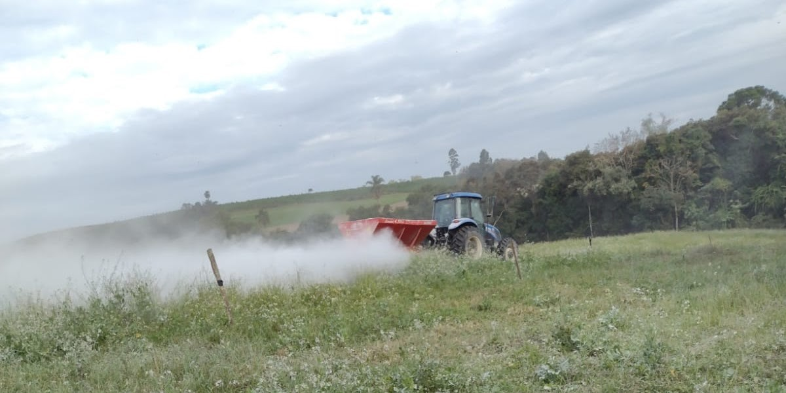

As tecnologias vieram para auxiliar as pessoas, tanto na cidade quanto no campo.
Fonte: arquivo pessoal.
A Era Tecnológica automatizou e alterou muitas formas de trabalho, inclusive na agricultura. Isso só se tornou possível pala conexão entre campo-cidade, e se tornou muito importante para os produtores rurais.
Algumas avanços tecnológicos incluem:
- Robôs;
- Sensores;
- Drones;
- Softwares de gestão, controle de gastos;
- Monitoramento em tempo real de plantações, animais;
- Máquinas, como tratores, colhedores com GPS, piloto automático.

Fonte: arquivo pessoal.
Na prática, os produtores conseguem ter mais automação, rapidez e eficiência nos serviços, maior acertividade nas tomadas de decisões, reduzindo o disperdício e aumentando a sustentabilidade. Melhorando assim, a qualidade de vida e tendo maior rentabilidade.